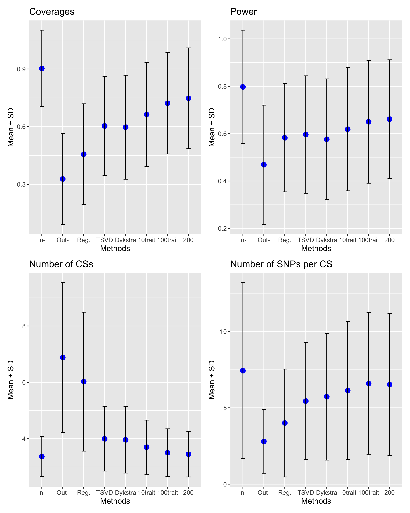
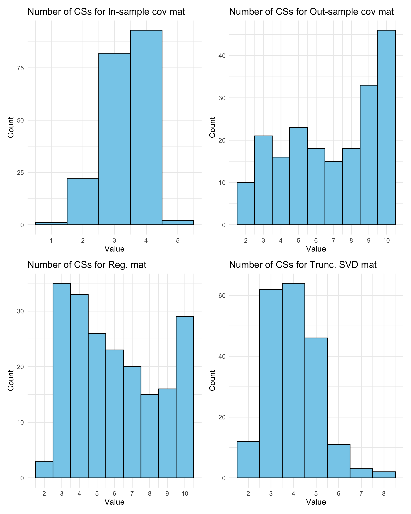

Last updated: 2025-08-29
Checks: 7 0
Knit directory: Improved_LD_SuSiE/
This reproducible R Markdown analysis was created with workflowr (version 1.7.1). The Checks tab describes the reproducibility checks that were applied when the results were created. The Past versions tab lists the development history.
Great! Since the R Markdown file has been committed to the Git repository, you know the exact version of the code that produced these results.
Great job! The global environment was empty. Objects defined in the global environment can affect the analysis in your R Markdown file in unknown ways. For reproduciblity it’s best to always run the code in an empty environment.
The command set.seed(20250821) was run prior to running
the code in the R Markdown file. Setting a seed ensures that any results
that rely on randomness, e.g. subsampling or permutations, are
reproducible.
Great job! Recording the operating system, R version, and package versions is critical for reproducibility.
Nice! There were no cached chunks for this analysis, so you can be confident that you successfully produced the results during this run.
Great job! Using relative paths to the files within your workflowr project makes it easier to run your code on other machines.
Great! You are using Git for version control. Tracking code development and connecting the code version to the results is critical for reproducibility.
The results in this page were generated with repository version 3cf2f6b. See the Past versions tab to see a history of the changes made to the R Markdown and HTML files.
Note that you need to be careful to ensure that all relevant files for
the analysis have been committed to Git prior to generating the results
(you can use wflow_publish or
wflow_git_commit). workflowr only checks the R Markdown
file, but you know if there are other scripts or data files that it
depends on. Below is the status of the Git repository when the results
were generated:
Ignored files:
Ignored: .DS_Store
Ignored: .Rhistory
Untracked files:
Untracked: code_push.R
Unstaged changes:
Modified: analysis/index.Rmd
Note that any generated files, e.g. HTML, png, CSS, etc., are not included in this status report because it is ok for generated content to have uncommitted changes.
These are the previous versions of the repository in which changes were
made to the R Markdown (analysis/Compare_LD_Mat.Rmd) and
HTML (docs/Compare_LD_Mat.html) files. If you’ve configured
a remote Git repository (see ?wflow_git_remote), click on
the hyperlinks in the table below to view the files as they were in that
past version.
| File | Version | Author | Date | Message |
|---|---|---|---|---|
| Rmd | 3cf2f6b | dodat97 | 2025-08-29 | wflow_publish(c("analysis/Compare_LD_Mat.Rmd")) |
library(susieR)
gtex <- readRDS("data/Thyroid_ENSG00000132855.rds")
num_reps = 200
num_covs = 8
coverages = matrix(0, nrow = num_reps, ncol = num_covs)
powers = matrix(0, nrow = num_reps, ncol = num_covs)
no_CSs = matrix(0, nrow = num_reps, ncol = num_covs)
no_SNPs_CS = matrix(0, nrow = num_reps, ncol = num_covs)
compare_R = rep(0, num_reps)
maf = apply(gtex, 2, function(x) sum(x)/2/length(x))
X0 = gtex[, maf > 0.01]
dim(X0)[1] 574 7154X = na.omit(X0)
dim(X)[1] 574 7154snp_total = ncol(X0)
# L = 4 # true
L = 10 # overfitting
PVEs = rep(0, num_reps)
proj_B <- function(R, v){
R_hat_minus = R - tcrossprod(v)
eigen_R = eigen(R_hat_minus)
V <- eigen_R$vectors
D_plus <- diag(pmax(eigen_R$values, 0))
R_hat_plus <- V %*% D_plus %*% t(V) + tcrossprod(v)
return(R_hat_plus)
}
symmetrize <- function(R){
(R + t(R)) / 2
}
for (seed in 1:num_reps){
set.seed(seed)
n = nrow(X0)
## good example: seed 3, 4, 8, 10, 11, 12
## bad example: seed 5
# Remove SNPs with MAF < 0.01
p = 200
min_cor = 0.5
# Start from a random point on the genome
indx_start = sample(1: (snp_total - p), 1)
X = X0[, indx_start:(indx_start + p -1)]
# View(cor(X)[1:10, 1:10])
## sub-sample into two
out_sample = sample(1:n, 100)
X_out = X[out_sample, ]
X_in = X[setdiff(1:n, out_sample), ]
sum(is.na(X_out))
rm_p = c(which(diag(cov(X_in))==0), which(diag(cov(X_out))==0))
length(rm_p)
indx_p = setdiff(1:p, rm_p)
X_in = X_in[, indx_p]
X_out = X_out[, indx_p]
## Standardize both sample matrices
X_in <- scale(X_in)
X_out <- scale(X_out)
## out-sample LD matrix
R_hat = cor(X_out)
R0 = cor(X_in)
## generate data from in-sample X matrix
p = ncol(X_in)
beta <- rep(0,p)
n = nrow(X_in)
truth = c(1, 50, 100, 150)
true_effect_val = c(2, 1, -2, 3)
beta[truth] <- true_effect_val
# plot(beta, pch=16, ylab='effect size')
sigma_true = 2
y <- X_in %*% beta + sigma_true * rnorm(n)
PVE_unnorm = var(X_in[, c(1, 50, 100, 150)] %*% true_effect_val)
PVE = PVE_unnorm / (PVE_unnorm + sigma_true^2)
PVEs[seed] = PVE
y = scale(y)
## compute summary statistics
sumstats <- univariate_regression(X_in, y)
z_scores <- sumstats$betahat / sumstats$sebetahat
# susie_plot(z_scores, y = "z", b=beta)
# L = 10 # overfitted
## fit the susie-rss model with in-sample R
fitted_rss1 <- susie_rss(bhat = sumstats$betahat, shat = sumstats$sebetahat, n = n,
R = R0, var_y = var(y), L = L,
estimate_residual_variance = F,
min_abs_corr=min_cor)
summary(fitted_rss1)$cs
# p1 = susie_plot(fitted_rss1, y="PIP", b=beta)
## fit the model with out-sample R
fitted_rss2 <- susie_rss(bhat = sumstats$betahat, shat = sumstats$sebetahat, n = n,
R = R_hat, var_y = var(y), L = L,
estimate_residual_variance = F,
min_abs_corr=min_cor)
# will have problem non-positive cov if estimate_residual_variance = TRUE
summary(fitted_rss2)$cs
# p2 = susie_plot(fitted_rss2, y="PIP", b=beta) ## miss the true or does not run
## adjusted by identity matrix
lambda = 0.1
R_hat_lambd = (1-lambda) * R_hat + lambda * diag(p)
fitted_rss3 <- susie_rss(bhat = sumstats$betahat, shat = sumstats$sebetahat, n = n,
R = R_hat_lambd, var_y = var(y), L = L,
estimate_residual_variance = F,
min_abs_corr=min_cor)
# will have problem non-positive cov if estimate_residual_variance = TRUE
# summary(fitted_rss3)$cs
# susie_plot(fitted_rss3, y="PIP", b=beta)
## using truncated SVD
XtY = t(X_in) %*% y
v = XtY / (n-1)
R_hat_plus = proj_B(R_hat, v)
fitted_rss4 <- susie_rss(bhat = sumstats$betahat, shat = sumstats$sebetahat, n = n,
R = R_hat_plus, var_y = var(y), L = L,
estimate_residual_variance = F,
min_abs_corr=min_cor)
# summary(fitted_rss4)$cs
# susie_plot(fitted_rss4, y="PIP", b=beta)
## Dykstra projection algorithm
P = matrix(0, nrow = p, ncol = p)
Q = matrix(0, nrow = p, ncol = p)
R = R_hat
for (iter_proj in 1:20){
R_ = R + P
diag(R_) = 1 ## project C (diagonal constraint)
P = R + P - R_
R = proj_B(R_ + Q, v) ## project B (semidefinite constraint)
Q = R_ + Q - R
# print(sum((R - R0)^2))
}
R_hat_dykstra = R
fitted_rss5 <- susie_rss(bhat = sumstats$betahat, shat = sumstats$sebetahat, n = n,
R = R_hat_dykstra, var_y = var(y), L = L,
estimate_residual_variance = F,
min_abs_corr=min_cor)
## multiple trait true covariance matrix of Y
M = 10 ## ntraits
betas = matrix(rnorm((M-1) * 4, mean = 0, sd=2), nrow=4, ncol=M-1)
Y = X_in[, truth] %*% betas + sigma_true * matrix(rnorm(n*(M-1)), nrow=n, ncol=M-1)
Y = cbind(y, Y)
Y = scale(Y)
C_Y = (t(Y) %*% Y) / (n-1)
V_XY = (t(X_in) %*% Y) / (n-1)
R_hat_minus = R_hat - V_XY %*% solve(C_Y, t(V_XY))
eigen_R = eigen(R_hat_minus)
V <- eigen_R$vectors
D_plus <- diag(pmax(eigen_R$values, 0))
R_hat_plus_multi <- V %*% D_plus %*% solve(V) + V_XY %*% solve(C_Y, t(V_XY))
R_hat_plus_multi = symmetrize(R_hat_plus_multi)
err_1trait = sum((R_hat_plus - R0)^2)
err_Mtrait = sum((R_hat_plus_multi - R0)^2)
print(err_1trait)
print(err_Mtrait)
print((err_Mtrait < err_1trait))
fitted_rss6 <- susie_rss(bhat = sumstats$betahat, shat = sumstats$sebetahat, n = n,
R = R_hat_plus_multi, var_y = var(y), L = L,
estimate_residual_variance = F,
min_abs_corr=min_cor)
## multiple trait true covariance matrix of Y
M = 100 ## ntraits
betas = matrix(rnorm((M-1) * 4, mean = 0, sd=2), nrow=4, ncol=M-1)
Y = X_in[, truth] %*% betas + sigma_true * matrix(rnorm(n*(M-1)), nrow=n, ncol=M-1)
Y = cbind(y, Y)
Y = scale(Y)
C_Y = (t(Y) %*% Y) / (n-1)
V_XY = (t(X_in) %*% Y) / (n-1)
R_hat_minus = R_hat - V_XY %*% solve(C_Y, t(V_XY))
eigen_R = eigen(R_hat_minus)
V <- eigen_R$vectors
D_plus <- diag(pmax(eigen_R$values, 0))
R_hat_plus_multi <- V %*% D_plus %*% t(V) + V_XY %*% solve(C_Y, t(V_XY))
R_hat_plus_multi = symmetrize(R_hat_plus_multi)
err_1trait = sum((R_hat_plus - R0)^2)
err_Mtrait = sum((R_hat_plus_multi - R0)^2)
print(err_1trait)
print(err_Mtrait)
print((err_Mtrait < err_1trait))
fitted_rss7 <- susie_rss(bhat = sumstats$betahat, shat = sumstats$sebetahat, n = n,
R = R_hat_plus_multi, var_y = var(y), L = L,
estimate_residual_variance = F,
min_abs_corr=min_cor)
M = 200 ## ntraits
betas = matrix(rnorm((M-1) * 4, mean = 0, sd=2), nrow=4, ncol=M-1)
Y = X_in[, truth] %*% betas + sigma_true * matrix(rnorm(n*(M-1)), nrow=n, ncol=M-1)
Y = cbind(y, Y)
Y = scale(Y)
C_Y = (t(Y) %*% Y) / (n-1)
V_XY = (t(X_in) %*% Y) / (n-1)
R_hat_minus = R_hat - V_XY %*% solve(C_Y, t(V_XY))
eigen_R = eigen(R_hat_minus)
V <- eigen_R$vectors
D_plus <- diag(pmax(eigen_R$values, 0))
R_hat_plus_multi <- V %*% D_plus %*% t(V) + V_XY %*% solve(C_Y, t(V_XY))
R_hat_plus_multi = symmetrize(R_hat_plus_multi)
fitted_rss8 <- susie_rss(bhat = sumstats$betahat, shat = sumstats$sebetahat, n = n,
R = R_hat_plus_multi, var_y = var(y), L = L,
estimate_residual_variance = F,
min_abs_corr=min_cor)
## multiple trait Dykstra
# y2 <- X_in %*% beta + sigma_true * rnorm(n)
# y3 <- X_in %*% beta + sigma_true * rnorm(n)
# y2 = scale(y2)
# y3 = scale(y3)
#
# XtY2 = t(X_in) %*% y2
# v2 = XtY2 / (n-1)
# XtY3 = t(X_in) %*% y3
# v3 = XtY3 / (n-1)
#
# Q_ = matrix(0, nrow = p, ncol = p)
# Q1 = matrix(0, nrow = p, ncol = p)
# Q2 = matrix(0, nrow = p, ncol = p)
# Q3 = matrix(0, nrow = p, ncol = p)
# R3 = R_hat
# for (iter_proj in 1:20){
# R_ = R3 + Q3
# diag(R_) = 1 ## project C (diagonal constraint)
# Q3 = R3 + Q3 - R_
#
# R1 = proj_B(symmetrize(R_ + Q_), v) ## project B1 (semidefinite constraint)
# Q_ = R_ + Q_ - R1
#
# R2 = proj_B(symmetrize(R1 + Q1), v2) ## project B2 (semidefinite constraint)
# Q1 = R1 + Q1 - R2
#
# R3 = proj_B(symmetrize(R2 + Q2), v3) ## project B3 (semidefinite constraint)
# Q2 = R2 + Q2 - R3
#
# print(sum((R3 - R0)^2))
# }
# R_hat_dykstra_multi = symmetrize(R3)
#
# fitted_rss7 <- susie_rss(bhat = sumstats$betahat, shat = sumstats$sebetahat, n = n,
# R = R_hat_dykstra_multi, var_y = var(y), L = L,
# estimate_residual_variance = F,
# min_abs_corr=min_cor)
fitted_rss = list(fitted_rss1,
fitted_rss2,
fitted_rss3,
fitted_rss4,
fitted_rss5,
fitted_rss6,
fitted_rss7,
fitted_rss8)
for (v in 1:num_covs){
L_infer = nrow(summary(fitted_rss[[v]])$cs)
if (is.null(summary(fitted_rss[[v]])$cs)) {
coverages[seed, v] = 0
powers[seed, v] = 0
no_CSs[seed, v] = 0
no_SNPs_CS[seed, v] = 0
} else{
no_contains = 0
all_selected_SNPs = c()
for (ell in 1:L_infer){
this_CS = unlist(strsplit((summary(fitted_rss[[v]])$cs$variable[ell]), ",\\s*"))
all_selected_SNPs = c(all_selected_SNPs, this_CS)
no_contains = no_contains + (length(intersect(this_CS, truth)) > 0)
## coverage = proportion of CS that contains a true casual SNP
coverages[seed, v] = no_contains / L_infer
## power = proportion of casual SNP that is contained in a CS
selected = length(intersect(all_selected_SNPs, truth))
powers[seed, v] = selected / 4
## number of CSs
no_CSs[seed, v] = L_infer
## number of SNPs per CSs
no_SNPs_CS[seed, v] = length(all_selected_SNPs) / L_infer
}
}
}
}[1] 422.6502
[1] 381.6376
[1] TRUE[1] 422.6502
[1] 341.1284
[1] TRUE[1] 356.8823
[1] 291.9237
[1] TRUE[1] 356.8823
[1] 254.1751
[1] TRUE[1] 249.7343
[1] 240.2404
[1] TRUE[1] 249.7343
[1] 231.1387
[1] TRUE[1] 357.831
[1] 338.7294
[1] TRUE[1] 357.831
[1] 319.8527
[1] TRUE[1] 282.4174
[1] 260.0658
[1] TRUE[1] 282.4174
[1] 241.0683
[1] TRUE[1] 371.9472
[1] 324.0056
[1] TRUE[1] 371.9472
[1] 303.4876
[1] TRUE[1] 385.2506
[1] 352.6382
[1] TRUE[1] 385.2506
[1] 319.908
[1] TRUE[1] 339.0323
[1] 302.6947
[1] TRUE[1] 339.0323
[1] 251.6014
[1] TRUE[1] 388.9171
[1] 374.8204
[1] TRUE[1] 388.9171
[1] 357.7304
[1] TRUE[1] 308.2762
[1] 296.3449
[1] TRUE[1] 308.2762
[1] 284.5312
[1] TRUE[1] 305.1699
[1] 261.199
[1] TRUE[1] 305.1699
[1] 233.789
[1] TRUE[1] 442.8338
[1] 406.5592
[1] TRUE[1] 442.8338
[1] 386.4054
[1] TRUE[1] 490.1448
[1] 423.7746
[1] TRUE[1] 490.1448
[1] 396.8402
[1] TRUE[1] 308.4906
[1] 304.3834
[1] TRUE[1] 308.4906
[1] 290.9952
[1] TRUE[1] 260.293
[1] 227.7581
[1] TRUE[1] 260.293
[1] 203.5376
[1] TRUE[1] 258.9817
[1] 239.7557
[1] TRUE[1] 258.9817
[1] 217.324
[1] TRUE[1] 261.27
[1] 245.9253
[1] TRUE[1] 261.27
[1] 208.5736
[1] TRUE[1] 476.4908
[1] 456.3106
[1] TRUE[1] 476.4908
[1] 437.6717
[1] TRUE[1] 370.5441
[1] 353.4715
[1] TRUE[1] 370.5441
[1] 324.7954
[1] TRUE[1] 387.8306
[1] 370.5259
[1] TRUE[1] 387.8306
[1] 344.2133
[1] TRUE[1] 221.5606
[1] 202.4716
[1] TRUE[1] 221.5606
[1] 167.5095
[1] TRUE[1] 350.513
[1] 286.2123
[1] TRUE[1] 350.513
[1] 253.5553
[1] TRUE[1] 363.1827
[1] 306.1433
[1] TRUE[1] 363.1827
[1] 283.082
[1] TRUE[1] 272.6315
[1] 260.0276
[1] TRUE[1] 272.6315
[1] 246.9226
[1] TRUE[1] 233.5831
[1] 217.0929
[1] TRUE[1] 233.5831
[1] 182.9429
[1] TRUE[1] 656.309
[1] 617.7446
[1] TRUE[1] 656.309
[1] 568.6667
[1] TRUE[1] 361.3278
[1] 351.9936
[1] TRUE[1] 361.3278
[1] 337.1388
[1] TRUE[1] 299.4013
[1] 270.1916
[1] TRUE[1] 299.4013
[1] 253.0509
[1] TRUE[1] 277.8102
[1] 251.3708
[1] TRUE[1] 277.8102
[1] 217.0582
[1] TRUE[1] 236.1165
[1] 225.9965
[1] TRUE[1] 236.1165
[1] 213.5658
[1] TRUE[1] 455.1162
[1] 404.5815
[1] TRUE[1] 455.1162
[1] 314.177
[1] TRUE[1] 236.0926
[1] 199.2493
[1] TRUE[1] 236.0926
[1] 178.8846
[1] TRUE[1] 452.6451
[1] 423.0813
[1] TRUE[1] 452.6451
[1] 399.9299
[1] TRUE[1] 507.9885
[1] 473.7591
[1] TRUE[1] 507.9885
[1] 423.7366
[1] TRUE[1] 272.6706
[1] 262.6438
[1] TRUE[1] 272.6706
[1] 240.7268
[1] TRUE[1] 455.3187
[1] 427.3231
[1] TRUE[1] 455.3187
[1] 402.3359
[1] TRUE[1] 401.391
[1] 352.5166
[1] TRUE[1] 401.391
[1] 324.9734
[1] TRUE[1] 332.0074
[1] 313.4026
[1] TRUE[1] 332.0074
[1] 279.6271
[1] TRUE[1] 511.4976
[1] 468.2019
[1] TRUE[1] 511.4976
[1] 445.3597
[1] TRUE[1] 484.1817
[1] 456.4863
[1] TRUE[1] 484.1817
[1] 438.6088
[1] TRUE[1] 270.1073
[1] 253.9184
[1] TRUE[1] 270.1073
[1] 240.4182
[1] TRUE[1] 274.4567
[1] 257.1556
[1] TRUE[1] 274.4567
[1] 227.4846
[1] TRUE[1] 240.0795
[1] 216.5072
[1] TRUE[1] 240.0795
[1] 197.1794
[1] TRUE[1] 318.2581
[1] 298.1766
[1] TRUE[1] 318.2581
[1] 286.3658
[1] TRUE[1] 415.3916
[1] 376.2561
[1] TRUE[1] 415.3916
[1] 353.2344
[1] TRUE[1] 430.6551
[1] 401.4212
[1] TRUE[1] 430.6551
[1] 384.1483
[1] TRUE[1] 250.6282
[1] 172.515
[1] TRUE[1] 250.6282
[1] 151.9092
[1] TRUE[1] 276.5405
[1] 275.5156
[1] TRUE[1] 276.5405
[1] 243.1888
[1] TRUE[1] 365.2555
[1] 355.1984
[1] TRUE[1] 365.2555
[1] 329.1423
[1] TRUE[1] 212.2994
[1] 199.4881
[1] TRUE[1] 212.2994
[1] 183.3799
[1] TRUE[1] 397.2397
[1] 348.7508
[1] TRUE[1] 397.2397
[1] 298.5011
[1] TRUE[1] 411.0458
[1] 377.4612
[1] TRUE[1] 411.0458
[1] 352.6968
[1] TRUE[1] 194.1763
[1] 172.9691
[1] TRUE[1] 194.1763
[1] 147.9458
[1] TRUE[1] 398.6754
[1] 384.473
[1] TRUE[1] 398.6754
[1] 371.4216
[1] TRUE[1] 499.041
[1] 465.8583
[1] TRUE[1] 499.041
[1] 443.8961
[1] TRUE[1] 280.7637
[1] 267.4738
[1] TRUE[1] 280.7637
[1] 258.5628
[1] TRUE[1] 424.8702
[1] 395.8407
[1] TRUE[1] 424.8702
[1] 383.82
[1] TRUE[1] 529.0751
[1] 432.6903
[1] TRUE[1] 529.0751
[1] 372.7197
[1] TRUE[1] 249.9019
[1] 230.8397
[1] TRUE[1] 249.9019
[1] 212.8107
[1] TRUE[1] 474.2418
[1] 415.6543
[1] TRUE[1] 474.2418
[1] 362.6853
[1] TRUE[1] 218.2956
[1] 193.6222
[1] TRUE[1] 218.2956
[1] 178.0515
[1] TRUE[1] 285.4649
[1] 238.7469
[1] TRUE[1] 285.4649
[1] 201.6376
[1] TRUE[1] 299.1813
[1] 291.2444
[1] TRUE[1] 299.1813
[1] 283.6335
[1] TRUE[1] 331.5855
[1] 307.0363
[1] TRUE[1] 331.5855
[1] 293.4906
[1] TRUE[1] 247.1391
[1] 238.2145
[1] TRUE[1] 247.1391
[1] 222.6203
[1] TRUE[1] 334.4516
[1] 321.5125
[1] TRUE[1] 334.4516
[1] 266.6752
[1] TRUE[1] 386.7839
[1] 354.3492
[1] TRUE[1] 386.7839
[1] 330.3322
[1] TRUE[1] 599.9153
[1] 551.2687
[1] TRUE[1] 599.9153
[1] 519.8884
[1] TRUE[1] 220.6698
[1] 201.5125
[1] TRUE[1] 220.6698
[1] 180.0665
[1] TRUE[1] 268.3148
[1] 250.8049
[1] TRUE[1] 268.3148
[1] 234.7525
[1] TRUE[1] 365.2633
[1] 334.1716
[1] TRUE[1] 365.2633
[1] 310.5926
[1] TRUE[1] 259.9844
[1] 240.1318
[1] TRUE[1] 259.9844
[1] 224.4136
[1] TRUE[1] 240.3788
[1] 225.6712
[1] TRUE[1] 240.3788
[1] 206.5517
[1] TRUE[1] 370.0155
[1] 303.3181
[1] TRUE[1] 370.0155
[1] 285.186
[1] TRUE[1] 289.682
[1] 252.9439
[1] TRUE[1] 289.682
[1] 238.4109
[1] TRUE[1] 182.7091
[1] 150.231
[1] TRUE[1] 182.7091
[1] 117.8461
[1] TRUE[1] 278.5485
[1] 260.3338
[1] TRUE[1] 278.5485
[1] 245.7282
[1] TRUE[1] 406.4459
[1] 386.6918
[1] TRUE[1] 406.4459
[1] 345.2225
[1] TRUE[1] 429.3005
[1] 406.3402
[1] TRUE[1] 429.3005
[1] 384.7146
[1] TRUE[1] 229.0077
[1] 185.1661
[1] TRUE[1] 229.0077
[1] 175.5318
[1] TRUE[1] 316.1648
[1] 302.4458
[1] TRUE[1] 316.1648
[1] 270.7396
[1] TRUE[1] 263.9825
[1] 252.4279
[1] TRUE[1] 263.9825
[1] 240.5727
[1] TRUE[1] 291.3045
[1] 264.9525
[1] TRUE[1] 291.3045
[1] 245.8792
[1] TRUE[1] 377.514
[1] 359.7875
[1] TRUE[1] 377.514
[1] 321.3323
[1] TRUE[1] 391.4703
[1] 359.7498
[1] TRUE[1] 391.4703
[1] 341.7123
[1] TRUE[1] 370.3972
[1] 352.5566
[1] TRUE[1] 370.3972
[1] 328.0841
[1] TRUE[1] 440.947
[1] 431.9511
[1] TRUE[1] 440.947
[1] 421.3775
[1] TRUE[1] 283.1169
[1] 235.4258
[1] TRUE[1] 283.1169
[1] 217.6678
[1] TRUE[1] 436.2004
[1] 411.1754
[1] TRUE[1] 436.2004
[1] 393.1185
[1] TRUE[1] 251.0078
[1] 236.3997
[1] TRUE[1] 251.0078
[1] 212.5642
[1] TRUE[1] 326.5844
[1] 294.3381
[1] TRUE[1] 326.5844
[1] 238.5931
[1] TRUE[1] 351.7101
[1] 339.3546
[1] TRUE[1] 351.7101
[1] 323.8533
[1] TRUE[1] 431.4354
[1] 414.5441
[1] TRUE[1] 431.4354
[1] 392.9817
[1] TRUE[1] 416.852
[1] 394.8486
[1] TRUE[1] 416.852
[1] 322.1487
[1] TRUE[1] 393.361
[1] 261.8755
[1] TRUE[1] 393.361
[1] 245.7234
[1] TRUE[1] 507.6171
[1] 504.0127
[1] TRUE[1] 507.6171
[1] 494.4907
[1] TRUE[1] 458.5678
[1] 410.1441
[1] TRUE[1] 458.5678
[1] 381.6306
[1] TRUE[1] 282.4495
[1] 268.2168
[1] TRUE[1] 282.4495
[1] 245.1806
[1] TRUE[1] 292.1876
[1] 265.8877
[1] TRUE[1] 292.1876
[1] 244.3727
[1] TRUE[1] 286.0628
[1] 225.6024
[1] TRUE[1] 286.0628
[1] 200.2085
[1] TRUE[1] 426.7393
[1] 327.772
[1] TRUE[1] 426.7393
[1] 305.8303
[1] TRUE[1] 405.0594
[1] 371.0151
[1] TRUE[1] 405.0594
[1] 318.8849
[1] TRUE[1] 292.385
[1] 250.7544
[1] TRUE[1] 292.385
[1] 216.117
[1] TRUE[1] 348.7843
[1] 249.1387
[1] TRUE[1] 348.7843
[1] 210.7945
[1] TRUE[1] 363.9116
[1] 328.579
[1] TRUE[1] 363.9116
[1] 294.1579
[1] TRUE[1] 383.5406
[1] 344.5954
[1] TRUE[1] 383.5406
[1] 315.0828
[1] TRUE[1] 424.8249
[1] 385.277
[1] TRUE[1] 424.8249
[1] 344.1201
[1] TRUE[1] 318.0093
[1] 266.825
[1] TRUE[1] 318.0093
[1] 243.0254
[1] TRUE[1] 339.8771
[1] 328.3382
[1] TRUE[1] 339.8771
[1] 310.0607
[1] TRUE[1] 273.9187
[1] 246.716
[1] TRUE[1] 273.9187
[1] 220.9681
[1] TRUE[1] 234.3422
[1] 226.0172
[1] TRUE[1] 234.3422
[1] 212.0908
[1] TRUE[1] 436.1428
[1] 397.7862
[1] TRUE[1] 436.1428
[1] 373.08
[1] TRUE[1] 272.3974
[1] 223.7265
[1] TRUE[1] 272.3974
[1] 193.7958
[1] TRUE[1] 244.5573
[1] 219.8633
[1] TRUE[1] 244.5573
[1] 192.7637
[1] TRUE[1] 384.657
[1] 366.6744
[1] TRUE[1] 384.657
[1] 338.1741
[1] TRUE[1] 438.2971
[1] 413.7659
[1] TRUE[1] 438.2971
[1] 395.578
[1] TRUE[1] 326.5897
[1] 298.5016
[1] TRUE[1] 326.5897
[1] 273.1456
[1] TRUE[1] 457.5391
[1] 428.2877
[1] TRUE[1] 457.5391
[1] 407.6547
[1] TRUE[1] 488.8236
[1] 396.7763
[1] TRUE[1] 488.8236
[1] 360.9153
[1] TRUE[1] 365.3144
[1] 305.2603
[1] TRUE[1] 365.3144
[1] 284.7688
[1] TRUE[1] 324.5664
[1] 291.2496
[1] TRUE[1] 324.5664
[1] 260.053
[1] TRUE[1] 400.2362
[1] 334.2438
[1] TRUE[1] 400.2362
[1] 308.6129
[1] TRUE[1] 317.7166
[1] 251.5053
[1] TRUE[1] 317.7166
[1] 226.2613
[1] TRUE[1] 362.0217
[1] 337.9804
[1] TRUE[1] 362.0217
[1] 317.8432
[1] TRUE[1] 287.5549
[1] 238.1895
[1] TRUE[1] 287.5549
[1] 212.769
[1] TRUE[1] 366.1475
[1] 347.8595
[1] TRUE[1] 366.1475
[1] 307.2756
[1] TRUE[1] 293.5857
[1] 283.4289
[1] TRUE[1] 293.5857
[1] 260.1727
[1] TRUE[1] 251.4664
[1] 176.8344
[1] TRUE[1] 251.4664
[1] 144.0058
[1] TRUE[1] 298.7849
[1] 271.3697
[1] TRUE[1] 298.7849
[1] 248.4719
[1] TRUE[1] 383.7644
[1] 299.0894
[1] TRUE[1] 383.7644
[1] 236.9191
[1] TRUE[1] 447.2413
[1] 434.519
[1] TRUE[1] 447.2413
[1] 408.5271
[1] TRUE[1] 323.6735
[1] 272.3909
[1] TRUE[1] 323.6735
[1] 224.8742
[1] TRUE[1] 234.666
[1] 226.2156
[1] TRUE[1] 234.666
[1] 202.7498
[1] TRUE[1] 343.7518
[1] 288.6831
[1] TRUE[1] 343.7518
[1] 207.1004
[1] TRUE[1] 241.5412
[1] 206.5196
[1] TRUE[1] 241.5412
[1] 186.585
[1] TRUE[1] 517.0587
[1] 498.2971
[1] TRUE[1] 517.0587
[1] 470.1533
[1] TRUE[1] 478.3191
[1] 280.8682
[1] TRUE[1] 478.3191
[1] 251.7729
[1] TRUE[1] 509.6037
[1] 411.89
[1] TRUE[1] 509.6037
[1] 363.7263
[1] TRUE[1] 312.322
[1] 286.4964
[1] TRUE[1] 312.322
[1] 255.2201
[1] TRUE[1] 304.7523
[1] 282.1999
[1] TRUE[1] 304.7523
[1] 264.9176
[1] TRUE[1] 362.0255
[1] 342.8727
[1] TRUE[1] 362.0255
[1] 311.4544
[1] TRUE[1] 280.1307
[1] 259.6035
[1] TRUE[1] 280.1307
[1] 214.0236
[1] TRUE[1] 387.9444
[1] 335.686
[1] TRUE[1] 387.9444
[1] 309.6657
[1] TRUE[1] 376.0977
[1] 339.6697
[1] TRUE[1] 376.0977
[1] 315.5921
[1] TRUE[1] 354.6581
[1] 329.6265
[1] TRUE[1] 354.6581
[1] 309.4777
[1] TRUE[1] 529.4563
[1] 510.5001
[1] TRUE[1] 529.4563
[1] 483.0139
[1] TRUE[1] 452.5478
[1] 430.1929
[1] TRUE[1] 452.5478
[1] 408.6823
[1] TRUE[1] 151.3592
[1] 139.1663
[1] TRUE[1] 151.3592
[1] 117.7825
[1] TRUE[1] 339.3582
[1] 334.1314
[1] TRUE[1] 339.3582
[1] 324.9705
[1] TRUE[1] 320.7576
[1] 267.0286
[1] TRUE[1] 320.7576
[1] 237.2482
[1] TRUE[1] 198.7203
[1] 161.0565
[1] TRUE[1] 198.7203
[1] 145.3264
[1] TRUE[1] 324.6551
[1] 304.9592
[1] TRUE[1] 324.6551
[1] 285.649
[1] TRUE[1] 449.4651
[1] 399.8267
[1] TRUE[1] 449.4651
[1] 365.1437
[1] TRUE[1] 360.2984
[1] 327.2456
[1] TRUE[1] 360.2984
[1] 308.9794
[1] TRUE[1] 559.8572
[1] 465.0618
[1] TRUE[1] 559.8572
[1] 402.4227
[1] TRUE[1] 221.5716
[1] 211.6915
[1] TRUE[1] 221.5716
[1] 203.1391
[1] TRUE[1] 341.957
[1] 318.1004
[1] TRUE[1] 341.957
[1] 308.5367
[1] TRUE[1] 596.0435
[1] 540.6588
[1] TRUE[1] 596.0435
[1] 493.4568
[1] TRUE[1] 423.3444
[1] 385.0741
[1] TRUE[1] 423.3444
[1] 352.4636
[1] TRUE[1] 331.6989
[1] 293.3978
[1] TRUE[1] 331.6989
[1] 247.3301
[1] TRUE[1] 303.0863
[1] 238.2397
[1] TRUE[1] 303.0863
[1] 200.5599
[1] TRUE[1] 524.6428
[1] 506.0204
[1] TRUE[1] 524.6428
[1] 441.3279
[1] TRUE[1] 388.9088
[1] 370.3126
[1] TRUE[1] 388.9088
[1] 313.5356
[1] TRUE[1] 325.1736
[1] 308.4964
[1] TRUE[1] 325.1736
[1] 291.9653
[1] TRUE[1] 288.9003
[1] 258.9557
[1] TRUE[1] 288.9003
[1] 216.471
[1] TRUE[1] 252.5627
[1] 198.7185
[1] TRUE[1] 252.5627
[1] 174.9561
[1] TRUE[1] 282.0269
[1] 222.3823
[1] TRUE[1] 282.0269
[1] 203.8095
[1] TRUE[1] 561.7743
[1] 458.8701
[1] TRUE[1] 561.7743
[1] 417.1665
[1] TRUE[1] 283.82
[1] 267.3035
[1] TRUE[1] 283.82
[1] 252.5178
[1] TRUE[1] 285.9888
[1] 267.888
[1] TRUE[1] 285.9888
[1] 248.3121
[1] TRUE[1] 201.9247
[1] 191.8766
[1] TRUE[1] 201.9247
[1] 183.8417
[1] TRUE[1] 305.1604
[1] 284.3155
[1] TRUE[1] 305.1604
[1] 249.9362
[1] TRUE[1] 301.4914
[1] 295.0059
[1] TRUE[1] 301.4914
[1] 280.0932
[1] TRUE[1] 397.7553
[1] 317.1025
[1] TRUE[1] 397.7553
[1] 307.1226
[1] TRUE[1] 199.2146
[1] 195.1238
[1] TRUE[1] 199.2146
[1] 190.8785
[1] TRUE[1] 200.2041
[1] 158.5042
[1] TRUE[1] 200.2041
[1] 130.2179
[1] TRUE[1] 511.2594
[1] 453.1421
[1] TRUE[1] 511.2594
[1] 416.9216
[1] TRUE[1] 370.5435
[1] 325.8109
[1] TRUE[1] 370.5435
[1] 272.4777
[1] TRUE[1] 296.1406
[1] 221.3705
[1] TRUE[1] 296.1406
[1] 181.0734
[1] TRUE[1] 210.1217
[1] 197.8726
[1] TRUE[1] 210.1217
[1] 179.238
[1] TRUE[1] 284.9472
[1] 246.9281
[1] TRUE[1] 284.9472
[1] 221.364
[1] TRUE[1] 483.4776
[1] 449.4289
[1] TRUE[1] 483.4776
[1] 418.2472
[1] TRUE[1] 295.4161
[1] 226.7765
[1] TRUE[1] 295.4161
[1] 182.3624
[1] TRUE[1] 246.8289
[1] 227.2274
[1] TRUE[1] 246.8289
[1] 165.8523
[1] TRUE[1] 627.2817
[1] 598.4622
[1] TRUE[1] 627.2817
[1] 560.0337
[1] TRUE[1] 267.0879
[1] 243.8516
[1] TRUE[1] 267.0879
[1] 190.5505
[1] TRUE[1] 282.7821
[1] 270.1459
[1] TRUE[1] 282.7821
[1] 246.9882
[1] TRUE[1] 305.8921
[1] 272.6123
[1] TRUE[1] 305.8921
[1] 247.0695
[1] TRUE[1] 264.6905
[1] 241.1438
[1] TRUE[1] 264.6905
[1] 227.1703
[1] TRUE[1] 435.746
[1] 426.9864
[1] TRUE[1] 435.746
[1] 406.0514
[1] TRUE[1] 341.1549
[1] 297.8384
[1] TRUE[1] 341.1549
[1] 261.2043
[1] TRUE[1] 271.1868
[1] 250.2352
[1] TRUE[1] 271.1868
[1] 218.965
[1] TRUE[1] 318.1006
[1] 298.8694
[1] TRUE[1] 318.1006
[1] 272.1811
[1] TRUE[1] 174.7828
[1] 161.7286
[1] TRUE[1] 174.7828
[1] 134.7932
[1] TRUE[1] 275.983
[1] 245.5787
[1] TRUE[1] 275.983
[1] 159.1687
[1] TRUE[1] 445.6211
[1] 427.8493
[1] TRUE[1] 445.6211
[1] 391.3898
[1] TRUE[1] 204.9818
[1] 164.982
[1] TRUE[1] 204.9818
[1] 144.6685
[1] TRUE[1] 280.5569
[1] 239.8759
[1] TRUE[1] 280.5569
[1] 218.4396
[1] TRUE[1] 399.0212
[1] 382.4932
[1] TRUE[1] 399.0212
[1] 360.2112
[1] TRUE[1] 379.107
[1] 372.918
[1] TRUE[1] 379.107
[1] 361.6448
[1] TRUE# save(coverages, file='data/coverages_mat_overfit_worsePVE.RData')
# save(powers, file='data/powers_mat_overfit_worsePVE.RData')
# save(no_CSs, file='data/number_CSs_mat_overfit_worsePVE.RData')
# save(no_SNPs_CS, file='data/number_SNPs_per_CS_mat_overfit_worsePVE.RData')
# save(PVEs, file='data/PVE_worsePVE.RData')
#
# library(ggplot2)
list_mat = list(coverages, powers, no_CSs, no_SNPs_CS)
list_name = c("Coverages", "Power", "Number of CSs", "Number of SNPs per CS")
plots = list()
for (i in 1:4){
m = list_mat[[i]]
colnames(m) <- c('In-', 'Out-', 'Reg.', 'TSVD', 'Dykstra', '10trait', '100trait', '200')
means <- colMeans(m)
sds <- apply(m, 2, sd)
df <- data.frame(
variable = factor(colnames(m), levels = colnames(m)),
mean = means,
sd = sds
)
plots[[i]] = ggplot(df, aes(x = variable, y = mean)) +
geom_point(size = 3, color = "blue") +
geom_errorbar(aes(ymin = mean - sd, ymax = mean + sd), width = 0.2) +
labs(title = list_name[i],
x = "Methods", y = "Mean ± SD")
}
library(patchwork)
wrap_plots(plots, ncol = 2)
##Plot histogram of the number of CSs
cov_type = c('In-sample cov mat', 'Out-sample cov mat', 'Reg. mat', 'Trunc. SVD mat')
hists = list()
for (i in 1:4){
df <- data.frame(x = no_CSs[, i])
hists[[i]] = ggplot(df, aes(x = x)) +
geom_histogram(binwidth = 1, fill = "skyblue", color = "black", boundary = 0.5) +
scale_x_continuous(breaks = 1:max(df)) +
labs(title = paste("Number of CSs for", cov_type[i]),
x = "Value",
y = "Count") +
theme_minimal()
}
wrap_plots(hists, ncol = 2)
sessionInfo()R version 4.5.1 (2025-06-13)
Platform: aarch64-apple-darwin20
Running under: macOS Sequoia 15.6.1
Matrix products: default
BLAS: /Library/Frameworks/R.framework/Versions/4.5-arm64/Resources/lib/libRblas.0.dylib
LAPACK: /Library/Frameworks/R.framework/Versions/4.5-arm64/Resources/lib/libRlapack.dylib; LAPACK version 3.12.1
locale:
[1] en_US.UTF-8/en_US.UTF-8/en_US.UTF-8/C/en_US.UTF-8/en_US.UTF-8
time zone: America/Chicago
tzcode source: internal
attached base packages:
[1] stats graphics grDevices utils datasets methods base
other attached packages:
[1] patchwork_1.3.1 ggplot2_3.5.2 susieR_0.14.2 workflowr_1.7.1
loaded via a namespace (and not attached):
[1] sass_0.4.10 generics_0.1.4 stringi_1.8.7 lattice_0.22-7
[5] digest_0.6.37 magrittr_2.0.3 evaluate_1.0.4 grid_4.5.1
[9] RColorBrewer_1.1-3 fastmap_1.2.0 plyr_1.8.9 rprojroot_2.1.0
[13] jsonlite_2.0.0 Matrix_1.7-3 processx_3.8.6 whisker_0.4.1
[17] reshape_0.8.10 ps_1.9.1 mixsqp_0.3-54 promises_1.3.3
[21] httr_1.4.7 scales_1.4.0 jquerylib_0.1.4 cli_3.6.5
[25] rlang_1.1.6 crayon_1.5.3 withr_3.0.2 cachem_1.1.0
[29] yaml_2.3.10 tools_4.5.1 dplyr_1.1.4 httpuv_1.6.16
[33] vctrs_0.6.5 R6_2.6.1 matrixStats_1.5.0 lifecycle_1.0.4
[37] git2r_0.36.2 stringr_1.5.1 fs_1.6.6 irlba_2.3.5.1
[41] pkgconfig_2.0.3 callr_3.7.6 pillar_1.11.0 bslib_0.9.0
[45] later_1.4.2 gtable_0.3.6 glue_1.8.0 Rcpp_1.1.0
[49] xfun_0.52 tibble_3.3.0 tidyselect_1.2.1 rstudioapi_0.17.1
[53] knitr_1.50 farver_2.1.2 htmltools_0.5.8.1 labeling_0.4.3
[57] rmarkdown_2.29 compiler_4.5.1 getPass_0.2-4